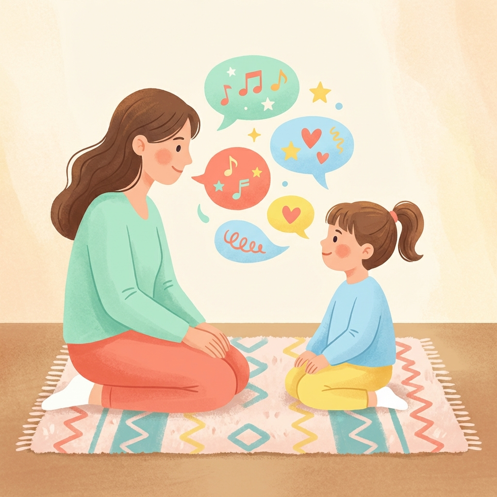

Der professionelle Begleiter für Eltern von Kindern ab 2 Jahren. Strategisch. Liebevoll. Alltagstauglich.
In diesem Alter entwickeln Kinder eine enorme kognitive Kapazität. Sie wissen genau, was sie wollen, aber die Motorik der Sprache hinkt oft hinterher. Das führt zu Frustration. Unser Ziel ist es, diese Frustration in Kommunikations-Energie umzuwandeln.
Die häufigste Barriere ist das "Helfersyndrom" der Eltern. Wir antizipieren Wünsche.
Wenn Ihr Kind auf den Wasserbecher zeigt, nehmen Sie ihn in die Hand, aber geben Sie ihn nicht sofort frei. Halten Sie inne. Schauen Sie Ihr Kind an. Warten Sie 10 Sekunden ab.
Wir eliminieren Ja/Nein-Fragen. Diese sind Sackgassen der Kommunikation.
Bieten Sie immer zwei Alternativen an, auch wenn eine offensichtlich ist. Halten Sie beide Objekte hoch.
Warum das wirkt: Das Gehirn muss das Wort hören, verarbeiten und eine Auswahl lautlich markieren (auch wenn es nur "Au" für Auto ist).
Jetzt bauen wir die Sätze Ihres Kindes aus. Wir werden zum lebenden Echo.
Wenn Ihr Kind ein Wort sagt, geben Sie es mit einem zusätzlichen Wort zurück.
Befolgen Sie diese Schritte täglich (ca. 15 Minuten bewusste Zeit).
Spielen Sie schweigend mit. Kommentieren Sie NICHTS. Seien Sie einfach da. Lassen Sie das Kind den ersten Laut machen.
Nutzen Sie "Brumm", "Miau", "Puff". Diese Laute sind motorisch leichter und bauen Brücken im Gehirn.
Geben Sie dem Kind die Gabel für die Suppe. Warten Sie auf den Protest. Protest ist die ehrlichste Form der Kommunikation.
Wenden Sie die Phase 2 bei JEDER Gelegenheit an (Essen, Kleidung, Spielzeug).
Sagen Sie: "Ich sehe einen grünen..." und warten Sie auf dem Bild vor dem Baum.
Filmen Sie eine Interaktion. Sie werden staunen, wie viel mehr Ihr Kind jetzt kommuniziert als vor 30 Tagen.
Vielen Dank, dass Sie diesen Weg gehen. Die Sprachentwicklung ist ein Marathon, kein Sprint. Genießen Sie die Stimme Ihres Kindes – sie ist einzigartig.